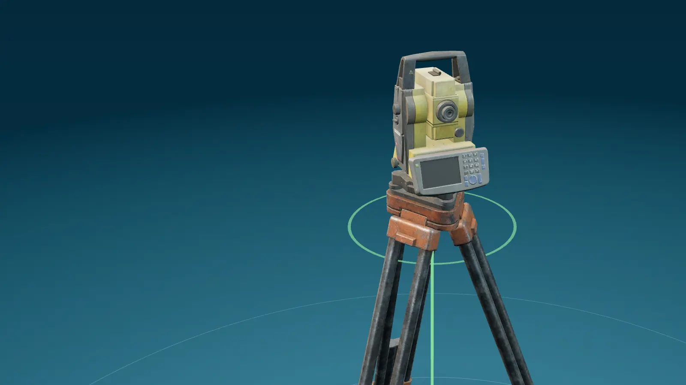

01 · Establish Control
Control first, then everything else
We set and observe the control network the whole project works from, including machine control networks, tying existing conditions to one coordinate system before anything is built.